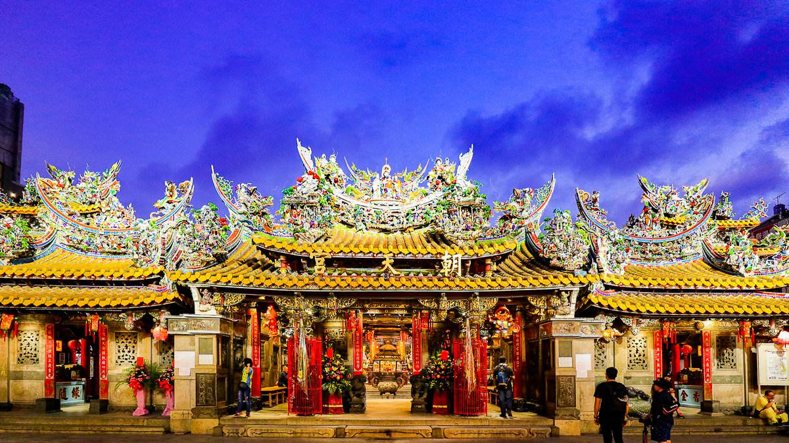
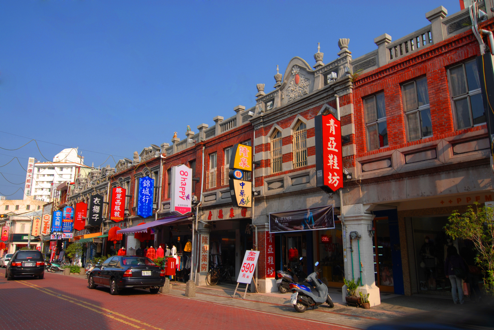
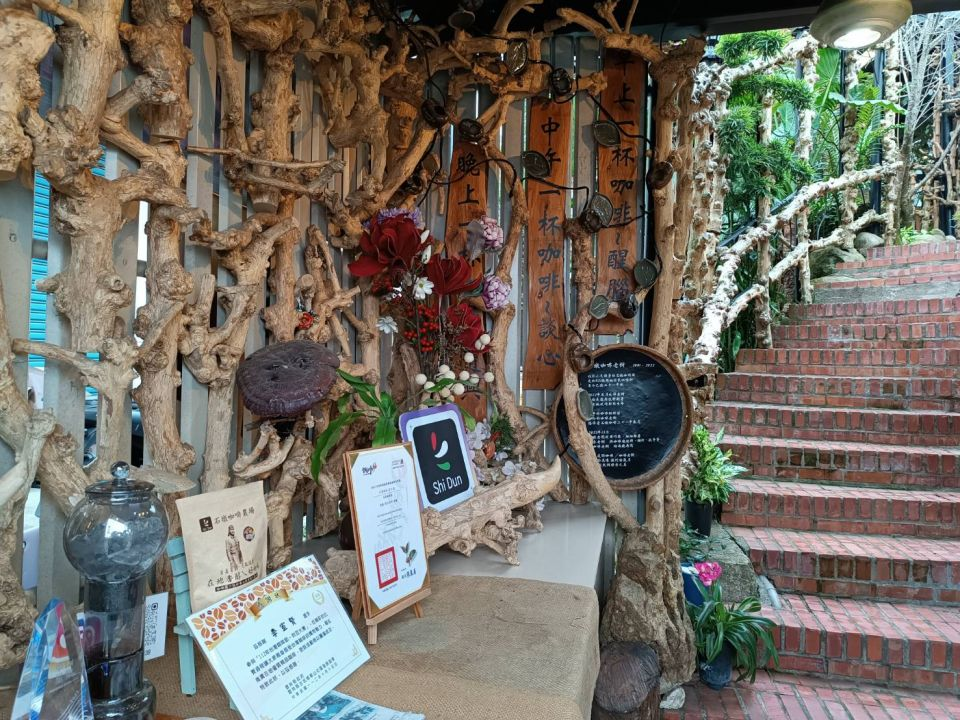

探索雲林
雲林縣位於台灣西部，是一個充滿自然風光和人文景觀的地方。以下是雲林著名的景點：

北港朝天宮
北港朝天宮舊稱天妃廟或天后宮，為了紀念分靈自湄洲的祖廟──朝天閣，才改名為朝天宮。 創建於清康熙年間，西元1694年，因神蹟靈驗，已成為全國三百餘座媽祖廟的總廟，外觀輝煌。 廟中供祀天上聖母及觀世音菩薩等神像。

太平老街
太平老街位於雲林縣斗六市的太平路上，全長約600公尺，從古至今太平路一直是斗六的主要商店街，是通往南北鄉村的聯絡道路。 老街上的樓房建築以巴洛克式風格為主體設計，已超過90多年的歷史，完整地呈現百年來台灣的建築發展史，來一趟老街，不論是歷史建築或是美食小吃，都能徹底地呈現出台灣早期濃濃的傳統特色與風味。

西螺大橋
西螺大橋位於濁水溪下游，橫跨雲林西螺及彰化溪州，這座受美援資助的大橋，長1,939.03公尺，寬7.32公尺，採華倫氏穿式橋樑，鋼鐵作架，水泥橋墩，衍樑31孔，橋墩32座，橋墩間隔60餘公尺，昔日為遠東第一大橋，往昔曾附設臺灣糖廠的小鐵道，形成汽車及小火車並行特殊景觀。

古坑咖啡小鎮
「台灣咖啡原鄉」的古坑鄉，位於台灣中部雲林縣最東的一鄉，海拔自50公尺到1,750公尺之間，天然景觀與生態資源十分豐富，景色秀麗，居高臨下。劍湖山遊樂世界、綠色隧道、草嶺風景區、華山休閒農業區、大尖山皆在古坑鄉境內；其中以草嶺風景區最具特色，擁有雲嶺之丘、萬年峽谷、峭壁雄風、水濂洞、幽情谷與步道、九芎神木等景點，因此古坑鄉素有「雲林縣的後花園」、「台灣中部的陽明山」之美譽。